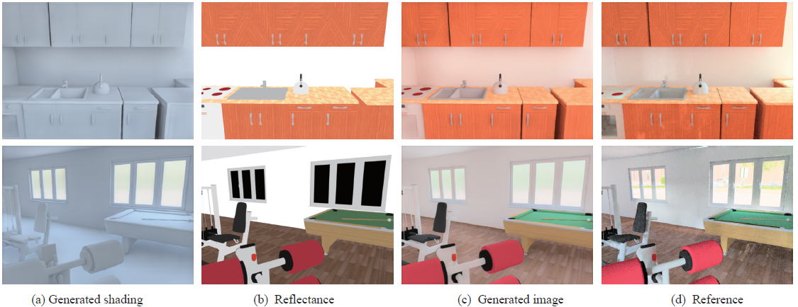
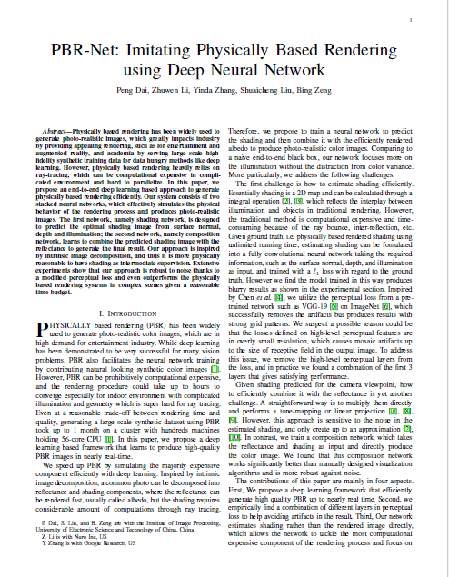
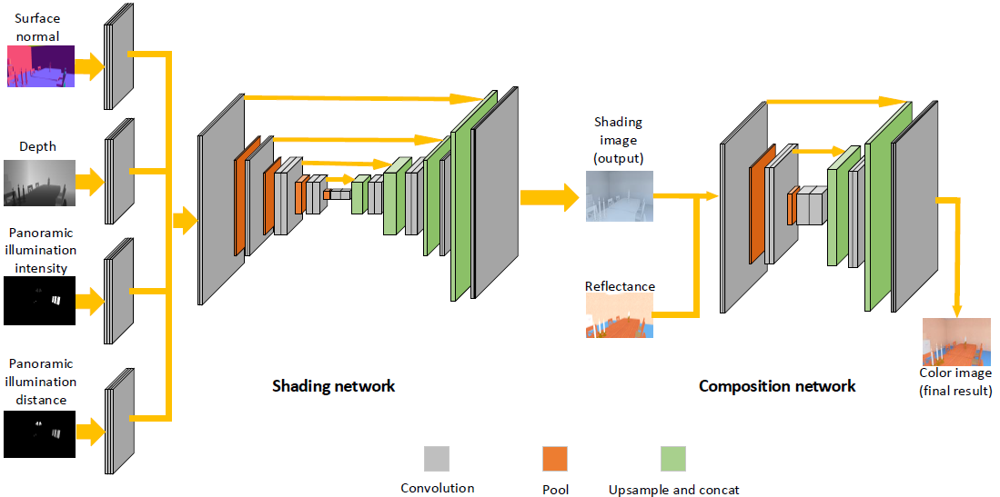
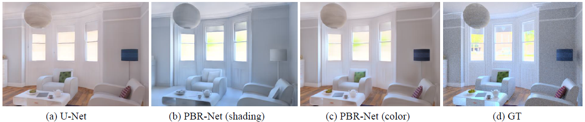
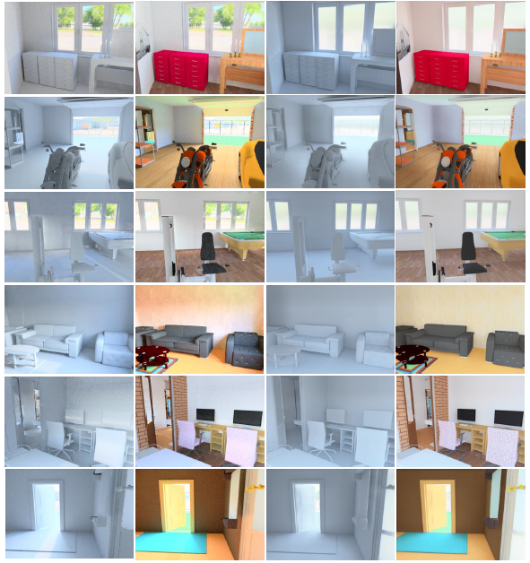
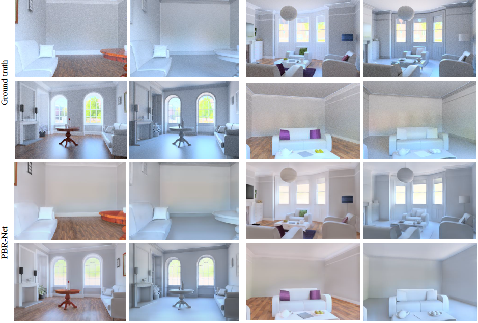

| Peng Dai | Zhuwen Li | Yinda Zhang | Shuaicheng Liu | Bing Zeng |
| University of Electronic Science and Technology of China |
| Google Research |
| Nuro.Inc |
|  |
Abstract
Physically based rendering has been widely used to
generate photo-realistic images, which greatly impacts industry
by providing appealing rendering, such as for entertainment and
augmented reality, and academia by serving large scale highfidelity
synthetic training data for data hungry methods like deep
learning. However, physically based rendering heavily relies on
ray-tracing, which can be computational expensive in complicated
environment and hard to parallelize. In this paper, we
propose an end-to-end deep learning based approach to generate
physically based rendering efficiently. Our system consists of two
stacked neural networks, which effectively simulates the physical
behavior of the rendering process and produces photo-realistic
images. The first network, namely shading network, is designed
to predict the optimal shading image from surface normal,
depth and illumination; the second network, namely composition
network, learns to combine the predicted shading image with the
reflectance to generate the final result. Our approach is inspired
by intrinsic image decomposition, and thus it is more physically
reasonable to have shading as intermediate supervision. Extensive
experiments show that our approach is robust to noise thanks to
a modified perceptual loss and even outperforms the physically
based rendering systems in complex scenes given a reasonable
time budget.
Documents
|  |
"PBR-Net: Imitating Physically Based Rendering using Deep Neural Network", |
Framework
|  |
Results
|  |
(a)Transform directly using U-Net. (b)Shading images from PBR-Net. (c)Color images from PBR-Net. (d)Ground truth.
|  |
Test results on pbrs[1]. First and second columes are ground truth using mitsuba. Third and fourth columes are predictions from PBR-Net.
|  |
Test results on public avaiable models[2] after finetuning. The first and second rows are ground truth using mitsuba. Third and fourth rows are predictions from PBR-Net. Note that the scene for test is excluded from the finetune set .
Discussion
(1) Due to the limitation of high quality models, the generated results have a gap with photo-realistic images.
In the future, with the development of inverse rendering and more public avaiable models. Eventually, the rendering results will go further.
(2) In this implementation, the panaromic illumination images only encode the transparent windows, doors
and self-emmitting objects in one room as light sources. This approximation will impair the accurancy of lights.
What's more, how to effectively insert the illumination information into network to better relight the scene is also a valuable direction in the furture,
especifically for complex scenes.
Reference
[1] Y. Zhang, S. Song, E. Yumer, M. Savva, J.-Y. Lee, H. Jin, and
T. Funkhouser, “Physically-based rendering for indoor scene understanding
using convolutional neural networks,” in IEEE Conference
on Computer Vision and Pattern Recognition, 2017, pp. 5057–5065.
[2] B. Bitterli, “Rendering resources,” 2016, https://benediktbitterli.me/resources/.
Last updated: July 2020